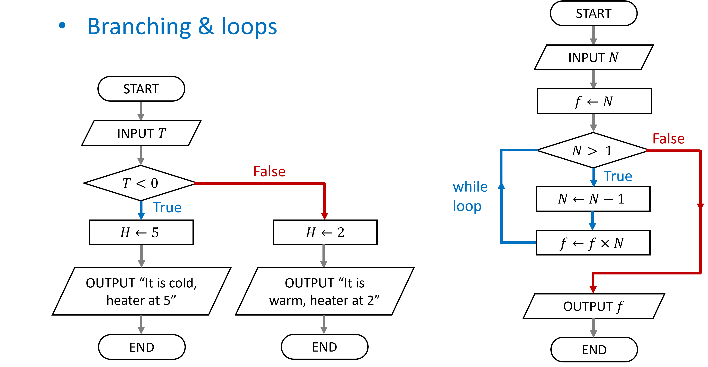
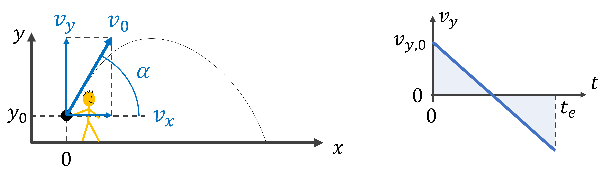

age = 46
if age >= 16:
print("You can drive a tractor") # if code-blockYou can drive a tractor
In computational algorithms the next steps taken can depend on certain conditions: this is called branching of the flow. Often this branching is designed such that a “loop” occurs in the control flow: in this situation a specific code-block will be repeated until some stopping condition (or for a finite amount of times). In Python there are specific constructs for this purpose:
Run code-blocks according to a condition
if code-block is executed when the condition is Trueelse code-block is executed when the condition is Falseif <condition>:
<statement>
...if <condition>:
<statement>
...
else:
<statement>
...If one wants to test for multiple conditions and act accordingly, the elif keyword acts as a else if. Multiple elif statements can follow an if, with an optional else:
if <condition>:
<statement>
...
elif <condition>:
<statement>
...
elif <condition>:
<statement>
...
else:
<statement>
...if <condition>:
<statement>
...
elif <condition>:
<statement>
...
elif <condition>:
<statement>
...The statements that follow the if clause should be indented and form the code-block that will be executed according to a condition. An if code-block is executed when the condition is True, for example:
age = 46
if age >= 16:
print("You can drive a tractor") # if code-blockYou can drive a tractorThe indented code-block can also contain multiple statements, which will be all executed when the condition is True:
speed_limit = 120
speed = 137
if speed > speed_limit:
speed_diff = speed - speed_limit
print(f"You drive {speed_diff} km/h too fast")You drive 17 km/h too fastWhen the condition is False the if code-block will not be executed. In case an else code-block is added it will be executed when the condition is False:
age = 11
if age > 18:
print("You can drive a car")
else:
print("You should take the bus")You should take the busIn case you want to cover more then two cases, i.e. you have multiple conditions, the elif keyword can be used. You can use it multiple times, and optionally still use an else clause in the end:
age = 17
if age > 18:
print("You can drive a car")
elif age > 16:
print("You can drive a tractor")
elif age > 15:
print("You can drive a moped")
else:
print("You can ride a bicycle")You can drive a tractorIn summary we can run code-blocks according to a condition
if code-block is executed when the condition is Trueelse code-block is executed when the condition is Falseelif keyword acts as a else ifBe careful with the indentation of the code-blocks otherwise your program will either exhibit unwanted behavior or will give an error, such as the following code:
age = 19
if age > 18:
print("You can drive a car") # This line is indented differently
print("You can drive a bicycle")
print("You can drive a tractor")File <string>:4 print("You can drive a bicycle") ^ IndentationError: unindent does not match any outer indentation level
A while loop repeats a code-block until the condition is False
while <condition>:
<statement>
<statement>
<statement>
...
<statement>A while loop is used when:
As an example we update a certain number \(x \rightarrow x^2 - 3x\) in each iteration and stop if the number becomes larger or equal to 1000:
x = 1
while x < 1000:
x = x ** 2 - 3 * x
print(x)
print("End of the program")-2
10
70
4690
End of the programAnother a bit more complex example, we want to calculate the cumulative sums of the series \(\sum_{n=1}^\infty \frac{1}{n^4}\) up to certain order \(N\):
x = 0; dx = 1; dx_min = 0.001; n = 1
while dx > dx_min:
dx = 1 / n ** 4
x = x + dx
print(f"The series up to order N = {n} is: {x:6.5}")
n = n + 1
print("End of the program")The series up to order N = 1 is: 1.0
The series up to order N = 2 is: 1.0625
The series up to order N = 3 is: 1.0748
The series up to order N = 4 is: 1.0788
The series up to order N = 5 is: 1.0804
The series up to order N = 6 is: 1.0811
End of the programNotice that the while loop can get in an infinite loop! This can happen if the stopping criterium is not adequate.
Ctrl + cTry the following code to get in an infinite loop:
n = 0
while n > -100:
n = n + 1
print(f"The current number is: {n}")The most frequently used loop structure is actually not the while loop but the for loop. The for loop has the advantage that it can be run a specific number of times. But before we go to the for loop we will have a brief look at the list data type, since this is often used in conjunction with for loops when iterating over the elements of a list.
A Python list is a collection of objects with a certain order:
# A list with mixed object types
my_list_of_objects = ["It's Monday", False, 34, 23.4]
# Lists can be elements of a list
a_list_with_a_list = [5, 10.5, ["green", "red"], True]
print(a_list_with_a_list)[5, 10.5, ['green', 'red'], True]The length of the list is the number of elements. Applying the len() function: len(a_list), allows us to find the number of elements.
number_of_objects = len(my_list_of_objects)
print(number_of_objects)4There are many methods defined on lists, such as: Appending an element, removing an element, inserting an element, etc.
When we append an element, the number of elements of the list increases with one:
a_list = ["First", False, 34, 23.4]
print(a_list)
print(f"The length of the list = {len(a_list)}")
a_list.append("extra_element")
print(a_list)
print(f"The length of the adapted list = {len(a_list)}")['First', False, 34, 23.4]
The length of the list = 4
['First', False, 34, 23.4, 'extra_element']
The length of the adapted list = 5Notice that we use the dot-notation: the_list.append(the_element). We already saw this notation in a different context: when using for example the square root function sqrt() of the math module:
import math
a = math.sqrt(2) # This is a function
print(f"The square root of 2 = {a}")The square root of 2 = 1.4142135623730951However, here this notation is not used to use a function of an imported package/module, here we use it to call a method on an object: we use the method append() on the list (the object).
We will see methods afterwards in more detail, but let us for now summarise We already saw multiple functions like: print(), input(), len(), etc. Methods are similar to functions but they are bound to an object. They can change the object on which they work (e.g. like append()) but don’t have to. The manner in which we use a method is:
a_list = ["First", False, 34, 5, 34] # Define the list
a_list.remove(34) # Remove first 34
a_list.insert(3, "inserted_string") # Insert str
print(a_list) # Print the list['First', False, 5, 'inserted_string', 34]There are more methods we can make use of, see https://docs.python.org/3/tutorial/datastructures.html#more-on-lists
We can select an element of a list by its index, this is, its place in the list.
a_list[element_index]Using the above rules we can select a specific element from the list, when using index 0 we will get the first element:
# Printing the first and then the second element
a_list = ["First", False, 34, 23.4]
print(a_list[0])
print(a_list[1])First
FalseOr selecting the last element using negative indexing:
# Using negative indexing
a_list = ["First", False, 34, 23.4]
print(a_list[-1])23.4We can also select multiple elements, this is called slicing, the syntax for slicing is: a_list[start:stop_exclusive] where we employ the colon-operator to separate the start and stop indices.
# A list with mixed object types
a_list = [23, 45, 65, 78, 92, 100, 102, 105 ]
print(a_list[2:5])[65, 78, 92]The start index can be omitted, then the selection is from the first element with index 0. For example, we can select the first five elements:
# An empty start_index starts from the first index
a_list = [23, 45, 65, 78, 92, 100, 102, 105 ]
print(a_list[:5])[23, 45, 65, 78, 92]Likewise when the stop index is omitted, the selection is until (and including) the last element. For example, selecting all elements from the fourth element on can be done as:
# An empty end_index end at the last index
a_list = [23, 45, 65, 78, 92, 100, 102, 105 ]
print(a_list[3:])[78, 92, 100, 102, 105]An additional step parameter can be used to skip elements: a_list[start:stop_exclusive:step], again we use the colon-operator to separate the start/stop/step parameters. We can for example select every second element:
# Take every second element by stepping
a_list = [23, 45, 65, 78, 92, 100, 102, 105 ]
print(a_list[1::2])[45, 78, 100, 105]Or we can reverse the list by using a negative step:
# Reverse the list by negative step
a_list = [23, 45, 65, 78, 92, 100, 102, 105 ]
print(a_list[::-1])[105, 102, 100, 92, 78, 65, 45, 23]Similar to the while loop, the for loop can be used to repeat a process. Unlike the while loop the for loop is meant for when either:
The structure of the for loop to iterate over the elements of a list is as follows:
for <element> in <list>:
<statement>
<statement>
...
<statement>For example, to iterate over the working days of the week and print them, we could use
# Print all elements of a list
days = ["Mon", "Tue", "Wed", "Thu", "Fri"]
for el in days:
print(el)Mon
Tue
Wed
Thu
FriThe for loop can also be used to repeat a process a known number of times. For this we replace the list by the range function, which can represent a “list” of numbers. The range function returns actually an object of type range (which belongs to the more general class of sequence just like list) for integer numbers, we can construct it as follows: range(start, stop_exclusive, step), where:
start is the first integer (default is zero),stop_exclusive is the last integer,step (default value is one),The range() does not give a list of integers, but a range object: this object is more memory efficient, it only generates the integer numbers when asked for (imagine you want to do billions of iterations). We can cast a range object into a list though:
a_range = range(1, 10, 2) # Construct a range
print(a_range) # Lazy evaluated
print(list(a_range)) # Converted to a listrange(1, 10, 2)
[1, 3, 5, 7, 9]We can use a range object directly in a for loop instead of the list to iterate over:
# Use the range function to get a sequence of numbers
for i in range(1,10,2):
print(i)1
3
5
7
9Using range we can also get the indices of a list. We can use the indices to print only the odd days of the week for example:
# Use the range function to get indices
days = ["Mon", "Tue", "Wed", "Thu", "Fri", "Sat", "Sun"]
for i in range(0,len(days),2):
print(days[i])Mon
Wed
Fri
SunOr one could apply the same index to multiple lists:
# Use the range function to get indices and apply to 2 lists
names = ["Mehmet", "Ceren", "Nisan", "Derin", "Ahmet", "Ali"]
lengths = ["189", "170", "182", "178", "177", "180"]
for i in range(len(names)):
print(f"{names[i]} is {lengths[i]} cm.")Mehmet is 189 cm.
Ceren is 170 cm.
Nisan is 182 cm.
Derin is 178 cm.
Ahmet is 177 cm.
Ali is 180 cm.Notice that both lists need to have the same length and the elements should be corresponding to make sense.
In science and engineering we often use numerical methods to simulate systems. As a practical example of using a while loop, let us calculate the trajectory \((x(t), y(t))\) of a ball that is thrown numerically. The ball has an initial position \((x(0), y(0)) = (0, 1.20)\) (in meters) and velocity \(v_0 = 6\) m/s thrown under an angle of 37 degrees, see the figure below.

We consider following conditions:
The numerical algorithm calculates the balls position at small discrete time steps and updates the ball’s velocity at each time step. The resulting coordinates form an approximate trajectory. The code uses the while loop to calculate subsequent coordinates until the ball drops on the ground (the stopping criterium). See the code below.
# Load library for sine and cosine
import math
# Algorithm parameters in MKS units
v0 = 6
angle_in_degrees = 37
g = 9.81
x = 0; y = 1.20; t = 0
# Calculate initial velocity in x
# and y directions
angle = angle_in_degrees * math.pi/180
vx = v0 * math.cos(angle)
vy = v0 * math.sin(angle)
# Initiate values at time t = 0
x_values = list([x])
y_values = list([y])
t_values = list([t])
dt = 0.1
while (y >= 0) and (t < 10):
# update velocities (vx, vy), coords
# (x, y), and time t
vy = vy - g*dt
y = y + vy*dt
x = x + vx*dt
t = t + dt
x_values.append(x)
y_values.append(y)
t_values.append(t)
print(f't = {t:.2f}: ({x:.2f},{y:.2f})')t = 0.10: (0.48,1.46)
t = 0.20: (0.96,1.63)
t = 0.30: (1.44,1.69)
t = 0.40: (1.92,1.66)
t = 0.50: (2.40,1.53)
t = 0.60: (2.88,1.31)
t = 0.70: (3.35,0.98)
t = 0.80: (3.83,0.56)
t = 0.90: (4.31,0.04)
t = 1.00: (4.79,-0.58)